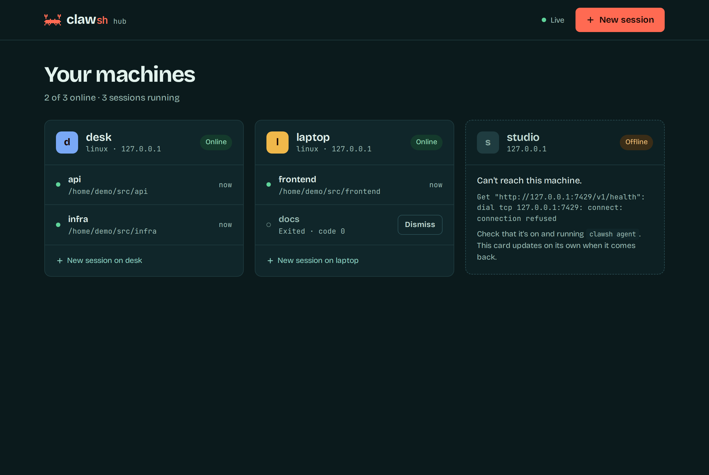
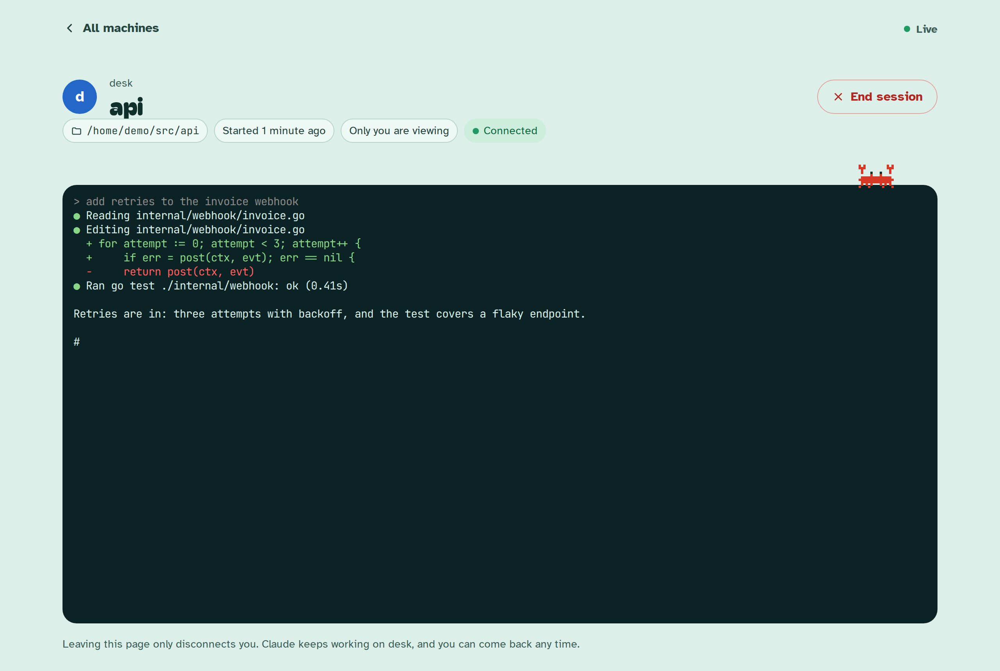
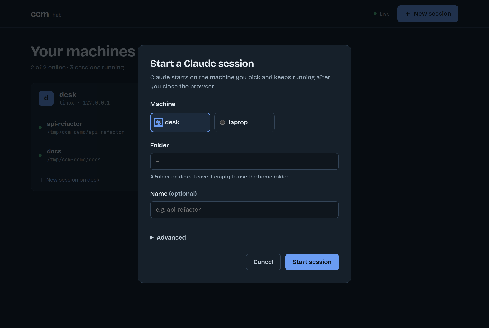

Every session, one tab.
clawsh web puts every machine and every Claude session in a browser tab. Start one, watch it work, step in, close the tab. Claude keeps going.



One command, no install
It's part of the same binary and reads the same hosts.toml as clawsh ls.
$ clawsh web clawsh web: open http://127.0.0.1:7421/?k=… (Ctrl-C to stop)